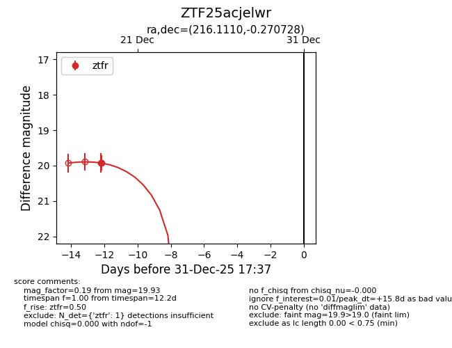
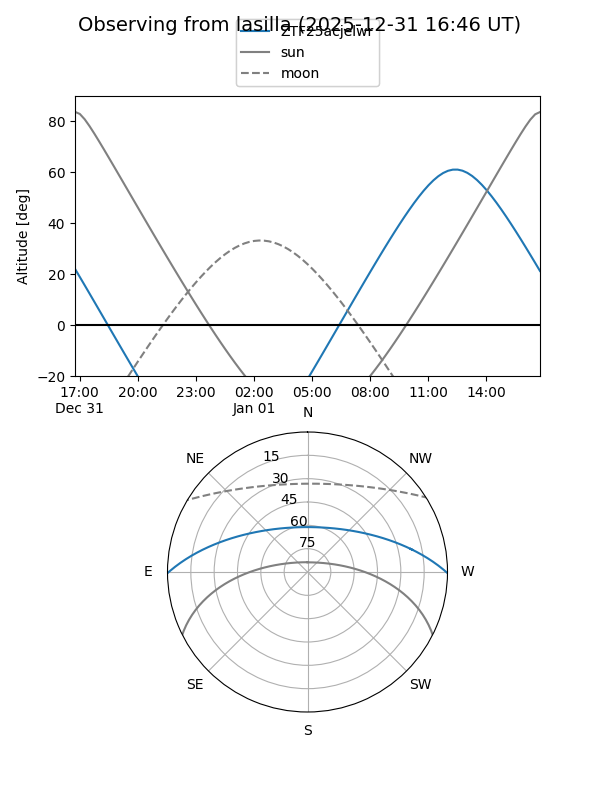
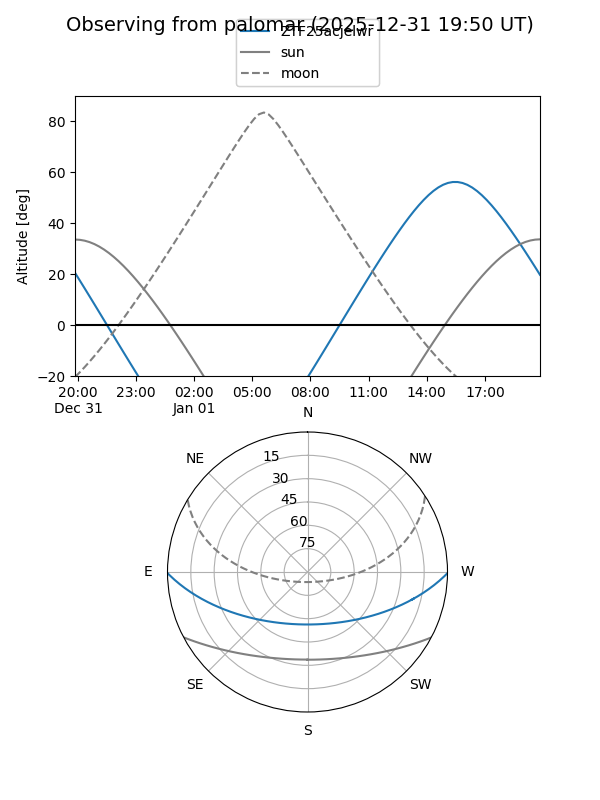
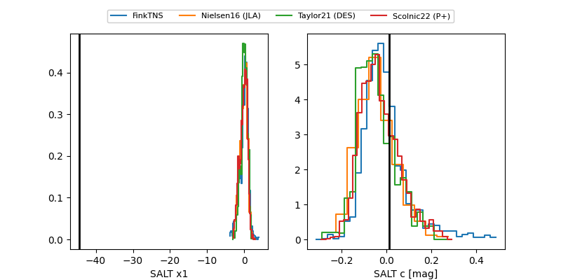

ZTF25acjelwr
Target ZTF25acjelwr at 2025-12-21 13:57
Aliases and brokers:
FINK: fink-portal.org/ZTF25acjelwr
Lasair: lasair-ztf.lsst.ac.uk/objects/ZTF25acjelwr
ALeRCE: alerce.online/object/ZTF25acjelwr
alt names
ZTF25acjelwr (ztf,fink_ztf)
Coordinates:
equatorial (ra, dec) = 216.1110,-0.27073
equatorial (HMS+DMS) = 14:24:26.65,-00:16:14.62
galactic (l, b) = (345.9443,+54.64078)
Flags:
Photometry:
last ztfr=19.93
1 ztfr detections
Lightcurve

Visibility


Additional plots
